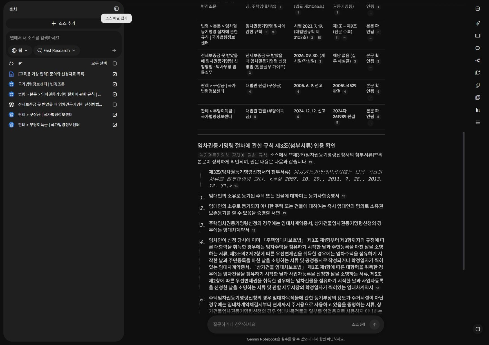
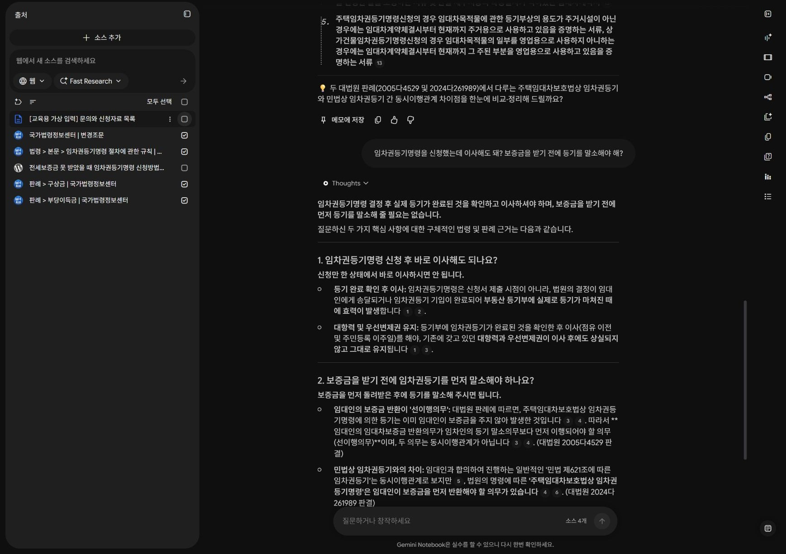
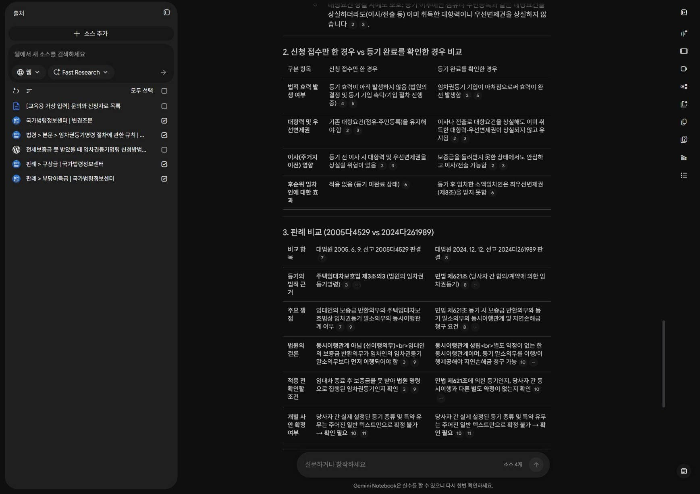
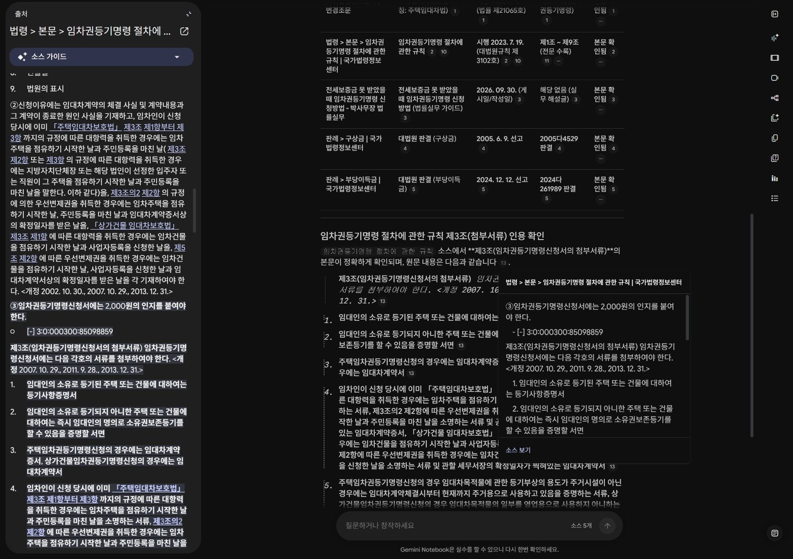
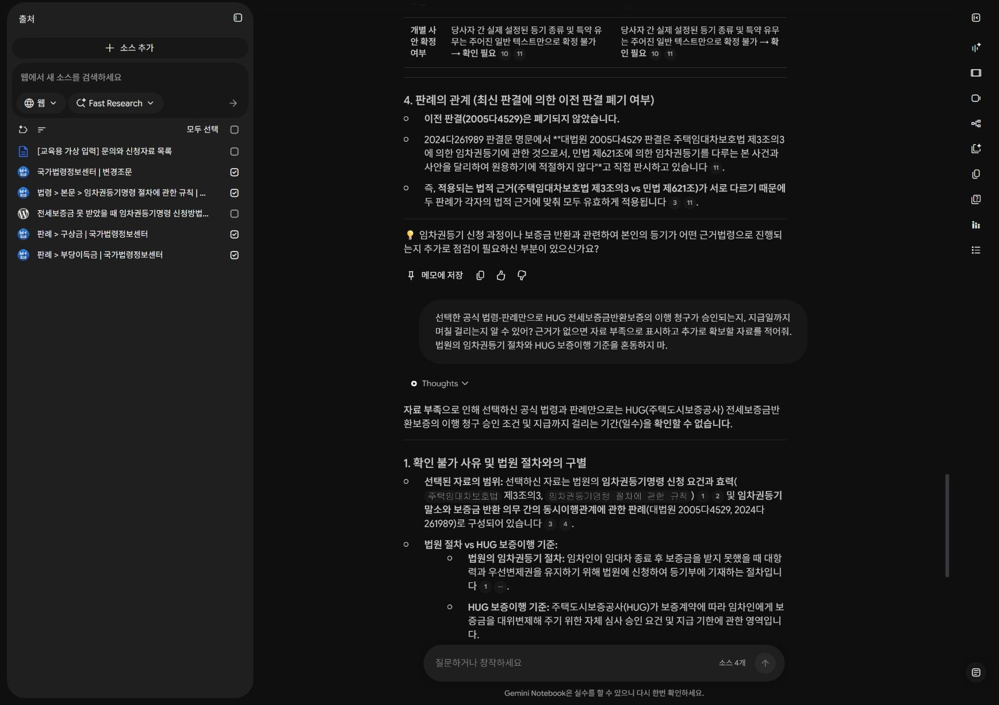

개인 역할별 조회 · 합계 30분
04 · 근거를 찾아 답하기
자료 범위와 질문을 바꿔 봅니다. 유사한 판례도 조건이 다르면 다른 답이 필요합니다.
이 페이지에서 · 바로 이동
A/B/C 역할별 조회는 합계 30분입니다. 핵심 질문을 각 노트북에서 실행하고, 원응답·인용·자료 부족을 기록합니다. 아래 긴 추가 활동은 선택 심화입니다.
오늘 실행할 노트북 A · 직원용 지식검색
60분: 질문·검색 20분 → 비교·원문 대조 25분 → 수정·저장 15분입니다. 앞 단원에서 준비한 45개 소스로 실행합니다. 각 질문의 실제 답변과 인용을 저장하고 원문을 대조합니다.
노트북 A · 45개 ZIP ↓45개 소스 목록 CSV · 실행 기록지 · 역할 지시문과 질문 전체
처음에는 상품 개요·제출서류·관련 법령을 구분합니다. 질문 1·2를 본인이 실행합니다. 질문 3·4는 선택 심화로 실행하고 본인의 근거를 대조합니다. 결과물은 상품 비교표와 판례 적용 조건 비교표입니다.
전세보증금반환보증과 전세금안심대출보증을 비교해줘. 보증채권자·대상·주요 신청 조건을 구분하고, 문서 ID와 근거 문장을 붙여줘. 두 상품의 조건을 섞지 말아줘.
주택임대차보호법과 민법에서 임차권등기를 다루는 규정, 그리고 2005다4529와 2024다261989 판결을 비교해줘. 각 판례의 등기 근거와 사실관계가 달라 일반화할 수 없는 부분을 적어줘.
민간임대주택 관련 법·시행령·시행규칙은 각각 어떤 역할을 하는지, 위임된 내용의 실제 조문을 한 가지씩 찾아 연결해줘.
오늘 등록한 자료만으로 HUG 내부 결재선과 담당자의 최종 승인 권한을 확정할 수 있어? 없다면 확인할 내부 문서를 요청해줘.
원문을 대조하고 수정 결과 남기기
- 인용을 열고 답변의 핵심 주장과 원문 문장을 나란히 기록합니다. ID만 맞고 원문이 주장을 지지하지 않으면 수정합니다.
- 법령 시행일·판례의 사건 시점·웹 안내의 확인일을 구분합니다. HUG 안내와 법률상 권리, 민원 절차의 적용 범위를 따로 확인합니다.
- 틀리거나 근거가 부족한 문장 하나를 골라 AI에 수정 요청을 하고, 수정한 답도 다시 원문과 대조합니다.
- 기록지에 질문·응답·인용·직접 고친 문장·담당자 확인 사항을 저장합니다. 내부망에서 재현하려면 필요한 승인된 내부 문서를 세 개 적습니다.
기존 5개 자료 리허설 · 선택 복습
아래 설명과 캡처는 2026.10.14에 진행한 별도 소규모 실습입니다. 45개 노트북 전체의 실행 결과가 아닙니다. 오늘 결과는 위 질문으로 본인 계정에서 만들고, 아래는 오류 수정·인용 확인 과정을 참고하세요.
이전 실행 화면과 단계별 오류 수정 펼치기
완성할 것: 근거가 붙은 비교표
| 비교 항목 | 직접 확인할 차이 |
|---|---|
| 신청 접수 / 등기 완료 | 제3조의3 제5항의 등기를 마친 경우라는 조건 |
| 2005다4529 | 주택임대차보호법 제3조의3에 따른 등기 |
| 2024다261989 | 민법 제621조에 따른 등기·다른 약정 여부 |
| 자료에 없는 질문 | HUG 보증 승인·지급일은 이 자료로 확정하지 않음 |
공식 자료만 선택하기
출처에서 블로그와 가상 입력의 체크를 해제합니다. 법령·규칙·판례 2건, 총 4개를 선택합니다.
- 예상 상태
- 질문 상자 옆 소스 수가 4개입니다.
- 직접 확인
- 소스 이름 옆 체크와 질문 상자 옆 개수를 함께 봅니다.
- 막혔을 때
- 체크 전체가 해제되었다면 공식 자료 4개만 하나씩 다시 선택합니다. 답변이 블로그에 기대면 선택 범위를 재확인합니다.


계정 영역을 잘랐습니다. 확대하면 원본 크기로 읽을 수 있습니다.
짧은 질문을 먼저 실행하기
아래 기본 질문을 실행합니다. 답에서 빠진 조건·구분을 메모하세요.
- 예상 상태
- 질문에 대한 답과 인용이 생성됩니다.
- 직접 확인
- 신청 접수와 완료, 등기 근거의 차이, 추가 확인 사항을 모두 다뤘는지 봅니다. 짧은 질문도 좋은 답을 줄 수 있으므로 무조건 실패라고 평가하지 않습니다.
- 막혔을 때
- 질문 상자를 찾기 어렵다면 스튜디오 패널을 접어 채팅 영역을 넓힙니다. 생성 중이면 중복 제출하지 않습니다.
임차권등기명령을 신청했는데 이사해도 돼? 보증금을 받기 전에 등기를 말소해야 해?


계정 영역을 잘랐습니다. 확대하면 원본 크기로 읽을 수 있습니다.
조건과 표를 지정해서 다시 묻기
아래 개선 질문을 실행하고 첫 답변과 비교합니다. 더 길어진 것이 아니라 어떤 조건이 분명해졌는지 설명하세요.
- 예상 상태
- 신청·완료 비교와 두 판례의 적용 조건을 구분한 표가 나옵니다.
- 직접 확인
- 2005년 판례를 폐기된 판례로 표현하지 않았는지, 2024년 판례의 민법 제621조 조건을 적었는지 확인합니다.
- 막혔을 때
- 두 판례를 같은 등기라고 합치면 사건번호와 법적 근거를 따로 열로 작성하도록 재요청합니다.
선택한 법령과 판례만 근거로 답해줘. 주택임대차보호법 제3조의3 제1항·제5항에서 신청 요건과 등기를 마친 후의 효과를 구분해. 신청 접수만 한 경우와 등기 완료를 확인한 경우를 표로 비교해. 이어 2005다4529와 2024다261989를 등기의 법적 근거 / 쟁점 / 결론 / 적용 전 확인할 조건으로 비교해. 최신 판결이라는 이유로 이전 판결이 폐기되었다고 추정하지 마. 인용을 붙이고 주어진 사실로 확정할 수 없는 사항은 확인 필요로 표시해.


계정 영역을 잘랐습니다. 확대하면 원본 크기로 읽을 수 있습니다.
인용을 열어 원문 대조하기
답변의 인용 숫자를 누릅니다. 해당 원문의 조문이나 판결요지를 읽고, 답변 문장과 같은 내용을 말하는지 확인합니다.
- 예상 상태
- 출처 패널에 해당 원문과 인용 구간이 열립니다.
- 직접 확인
- 인용이 있다는 사실과 인용이 결론을 지지한다는 사실을 구분합니다. 신청 접수만으로 등기 완료 효과를 설명하면 수정합니다.
- 막혔을 때
- 다른 부분이 열리면 문서명·조문·사건번호로 찾습니다. 찾을 수 없는 근거는 확인 필요로 표시합니다.


계정 영역을 잘랐습니다. 확대하면 원본 크기로 읽을 수 있습니다.
자료 밖 질문으로 한계 확인하기
보증이행 승인과 지급일을 묻는 아래 질문을 실행합니다.
- 예상 상태
- 자료 부족과 추가 확보 자료를 구분합니다.
- 직접 확인
- 공식 법령·판례에 없는 HUG 심사 기준을 만들어내지 않았는지 확인합니다.
- 막혔을 때
- 답변이 날짜나 승인 여부를 확약하면 해당 근거를 요청하고, 근거를 못 찾으면 문장을 삭제합니다.
선택한 공식 법령·판례만으로 HUG 전세보증금반환보증의 이행 청구가 승인되는지, 지급일까지 며칠 걸리는지 알 수 있어? 근거가 없으면 자료 부족으로 표시하고 추가로 확보할 자료를 적어줘. 법원의 임차권등기 절차와 HUG 보증이행 기준을 혼동하지 마.


계정 영역을 잘랐습니다. 확대하면 원본 크기로 읽을 수 있습니다.
저장하고 다른 질문에 재사용하기
비교표를 메모에 저장하고, 문서명·조문·사건번호를 함께 남깁니다. 새 질문으로 “계약이 아직 종료되지 않았다고 말하는 문의에는 무엇을 확인해야 할까?”를 입력하세요. 원문의 신청 요건을 찾아야 하며 계약 종료 여부를 추정해서는 안 됩니다.
스스로 확인하기
먼저 답을 생각한 뒤 해설을 펼치세요.
1. 최신 판례라면 이전 판례보다 무조건 우선하나요?
아니요. 이 두 판례는 등기의 법적 근거와 쟁점이 다릅니다. 사실관계와 적용 범위를 비교합니다.
2. 임차권등기 신청 접수와 실제 등기 완료를 같은 상태로 볼까요?
아니요. 제3조의3 제5항의 효과를 설명할 때 등기를 마친 경우라는 조건을 확인합니다.
3. 이 자료만으로 HUG 보증이행 승인 여부를 판단할까요?
아니요. 실제 보증약관·업무 기준과 해당 사실관계가 별도로 필요합니다.